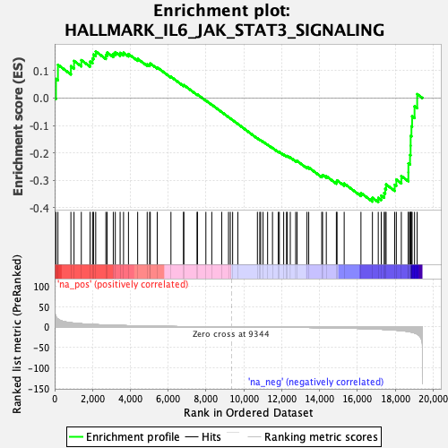
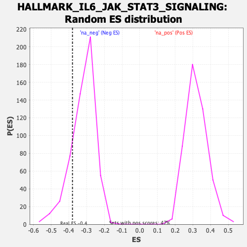

| | | Dataset | DE_genes |
| Phenotype | NoPhenotypeAvailable |
| Upregulated in class | na_neg |
| GeneSet | HALLMARK_IL6_JAK_STAT3_SIGNALING |
| Enrichment Score (ES) | -0.37982908 |
| Normalized Enrichment Score (NES) | -1.1888099 |
| Nominal p-value | 0.15572232 |
| FDR q-value | 0.16309968 |
| FWER p-Value | 0.978 |
Table: GSEA Results Summary

Fig 1: Enrichment plot: HALLMARK_IL6_JAK_STAT3_SIGNALING
Profile of the Running ES Score & Positions of GeneSet Members on the Rank Ordered List
| SYMBOL | RANK IN GENE LIST | RANK METRIC SCORE | RUNNING ES | CORE ENRICHMENT | | 1 | PLA2G2A | 69 | 25.048 | 0.0700 | No |
| 2 | TLR2 | 173 | 19.395 | 0.1216 | No |
| 3 | REG1A | 859 | 10.258 | 0.1164 | No |
| 4 | STAT1 | 1024 | 9.397 | 0.1355 | No |
| 5 | HMOX1 | 1409 | 7.760 | 0.1384 | No |
| 6 | IFNGR1 | 1873 | 6.382 | 0.1333 | No |
| 7 | IL17RB | 2003 | 6.081 | 0.1445 | No |
| 8 | JUN | 2055 | 5.971 | 0.1594 | No |
| 9 | IL1R2 | 2170 | 5.704 | 0.1702 | No |
| 10 | CXCL3 | 2707 | 4.686 | 0.1563 | No |
| 11 | IL18R1 | 2775 | 4.561 | 0.1662 | No |
| 12 | PTPN2 | 3099 | 4.072 | 0.1615 | No |
| 13 | IL2RG | 3205 | 3.905 | 0.1676 | No |
| 14 | PTPN11 | 3460 | 3.563 | 0.1649 | No |
| 15 | BAK1 | 3641 | 3.361 | 0.1655 | No |
| 16 | STAM2 | 3901 | 3.043 | 0.1610 | No |
| 17 | CXCL1 | 4387 | 2.501 | 0.1433 | No |
| 18 | SOCS1 | 4891 | 2.022 | 0.1233 | No |
| 19 | A2M | 5021 | 1.914 | 0.1223 | No |
| 20 | MYD88 | 5054 | 1.891 | 0.1262 | No |
| 21 | TNF | 5421 | 1.601 | 0.1120 | No |
| 22 | STAT3 | 6146 | 1.148 | 0.0779 | No |
| 23 | TYK2 | 6810 | 0.779 | 0.0460 | No |
| 24 | ACVR1B | 6827 | 0.771 | 0.0474 | No |
| 25 | CD9 | 7525 | 0.475 | 0.0128 | No |
| 26 | CNTFR | 7550 | 0.467 | 0.0130 | No |
| 27 | GRB2 | 7992 | 0.315 | -0.0089 | No |
| 28 | CSF1 | 8304 | 0.230 | -0.0243 | No |
| 29 | TNFRSF1B | 8829 | 0.101 | -0.0510 | No |
| 30 | LTB | 9189 | 0.030 | -0.0695 | No |
| 31 | IL1B | 9285 | 0.013 | -0.0744 | No |
| 32 | CD36 | 9407 | -0.011 | -0.0806 | No |
| 33 | PF4 | 9680 | -0.058 | -0.0944 | No |
| 34 | CCR1 | 10716 | -0.305 | -0.1470 | No |
| 35 | HAX1 | 10841 | -0.341 | -0.1524 | No |
| 36 | CSF2RB | 10889 | -0.351 | -0.1538 | No |
| 37 | ITGB3 | 11014 | -0.390 | -0.1591 | No |
| 38 | IL7 | 11255 | -0.458 | -0.1701 | No |
| 39 | PIM1 | 11513 | -0.539 | -0.1818 | No |
| 40 | CSF3R | 11819 | -0.638 | -0.1957 | No |
| 41 | IRF1 | 11875 | -0.656 | -0.1966 | No |
| 42 | IL9R | 12104 | -0.731 | -0.2062 | No |
| 43 | FAS | 12254 | -0.787 | -0.2116 | No |
| 44 | IL1R1 | 12296 | -0.805 | -0.2114 | No |
| 45 | PIK3R5 | 12453 | -0.880 | -0.2168 | No |
| 46 | PTPN1 | 12737 | -0.991 | -0.2285 | No |
| 47 | CSF2RA | 12814 | -1.022 | -0.2295 | No |
| 48 | IFNAR1 | 13336 | -1.262 | -0.2527 | No |
| 49 | ITGA4 | 13428 | -1.315 | -0.2535 | No |
| 50 | TNFRSF21 | 14117 | -1.754 | -0.2839 | No |
| 51 | INHBE | 14160 | -1.786 | -0.2808 | No |
| 52 | TNFRSF12A | 14357 | -1.930 | -0.2852 | No |
| 53 | IL12RB1 | 14888 | -2.351 | -0.3057 | No |
| 54 | IL6ST | 14925 | -2.386 | -0.3006 | No |
| 55 | CBL | 15302 | -2.735 | -0.3119 | No |
| 56 | ACVRL1 | 16188 | -3.796 | -0.3465 | No |
| 57 | CD44 | 16795 | -4.706 | -0.3640 | No |
| 58 | PDGFC | 17103 | -5.284 | -0.3643 | Yes |
| 59 | LTBR | 17261 | -5.632 | -0.3559 | Yes |
| 60 | IL17RA | 17415 | -5.978 | -0.3462 | Yes |
| 61 | LEPR | 17471 | -6.097 | -0.3312 | Yes |
| 62 | CD14 | 17517 | -6.221 | -0.3152 | Yes |
| 63 | MAP3K8 | 17972 | -7.555 | -0.3165 | Yes |
| 64 | TGFB1 | 18058 | -7.891 | -0.2977 | Yes |
| 65 | IL10RB | 18322 | -9.073 | -0.2847 | Yes |
| 66 | SOCS3 | 18694 | -11.128 | -0.2711 | Yes |
| 67 | TNFRSF1A | 18696 | -11.138 | -0.2385 | Yes |
| 68 | STAT2 | 18782 | -11.890 | -0.2080 | Yes |
| 69 | IFNGR2 | 18812 | -12.173 | -0.1737 | Yes |
| 70 | OSMR | 18815 | -12.197 | -0.1380 | Yes |
| 71 | IL13RA1 | 18857 | -12.689 | -0.1029 | Yes |
| 72 | IL4R | 18892 | -13.021 | -0.0664 | Yes |
| 73 | IRF9 | 19021 | -14.663 | -0.0300 | Yes |
| 74 | IL15RA | 19160 | -17.518 | 0.0144 | Yes |
Table: GSEA details [plain text format]

Fig 2: HALLMARK_IL6_JAK_STAT3_SIGNALING: Random ES distribution
Gene set null distribution of ES for HALLMARK_IL6_JAK_STAT3_SIGNALING